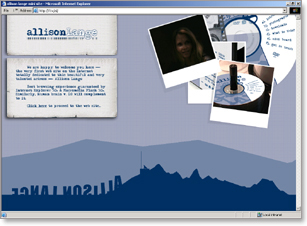
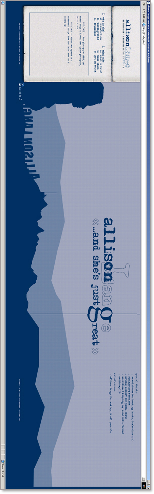
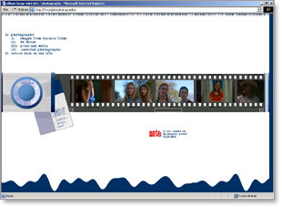

Allison Lange Mini Site is a first web site dedicated to Allison Lange, young actress who lives and works in Hollywood, California. She has become famous by playing lead rode in "Christina's House," and playing no so much leading role in TV-series "Roswell." Her latest role is 2003 movie "Gacy."
This site brings a surfer up-to-date on what's going on in Allison's life, it provides news, filography, photographs, media downloads, and much more.


Content interface

Photographs section